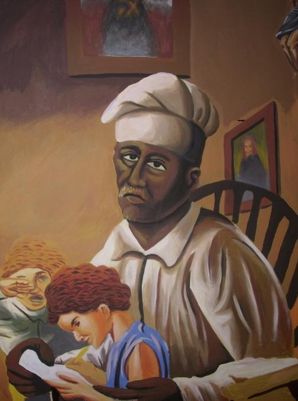

Nació el 24 de octubre de
1790 de Lucas y Rita, morenos libres que formaron una familia profundamente cristiana. Rafael, como sus hermanas mayores, Gregoria y Celestina,
dedicada a la educación de las niñas pobres, fue educado y atraído al magisterio por sus padres, por sus hermanas y por su compenetración con la
vida de San Antonio de Padua. Se formó poco a poco con la lectura de libros religiosos y se dedicó totalmente a la tarea de educar a la niñez en
el evangelio, abriendo su escuela en 1810, la cerró solo en su lecho de muerte.
Rafael hacía y vendía cigarros, también era zapatero. Con las ganancias de sus oficios sostenía a su familia
y mantenía su escuela. Enseñaba doctrina cristiana, a leer y a escribir. Rafael cedió totalmente su vida, su tiempo, sus energías y todos sus bienes
como ofrenda de amor a Dios y su prójimo, haciendo de su casa la escuela del amor divino, inmortalizada por Oller en su óleo. Hombre de gran fé, los
domingos y días de precepto a las 4 de la mañana ya estaba en misa, única ocasión que se vestía de gala con su traje azul festivo. De humildad
inigualable decia: "Yo no escribo nada en esta vida, porque no quiero recordar hoy el bien que hice ayer. Mis deseos son que la noche borre las obras
meritorias que he podido hacer durante el día".
El 5 de julio de 1868, anticipando su muerte, entregó a sus párvulos a las autoridades, se despidió de sus antiguos discipulos,
pidiendo sus oraciones y bendiciendolos. Multitud de personas quisieron darle tributo a los restos de aquel que había vivido para darle a la niñez el pan de
la enseñanza evangélica, siendo también los pobres, los preferidos de su gran corazón humilde.